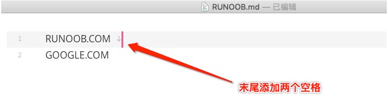

markdowm文件（.md）
1. 简介
Markdown 是一种轻量级标记语言，它允许人们使用易读易写的纯文本格式编写文档。
Markdown 语言在 2004 由约翰·格鲁伯（英语：John Gruber）创建。
Markdown 编写的文档可以导出 HTML 、Word、图像、PDF、Epub 等多种格式的文档。
Markdown 编写的文档后缀为 .md, .markdown。
2. 转换为html文件
- 利用编辑器直接转换
- 使用插件类型（i5ting_toc）
- 全局安装 npm install -g i5ting_toc
- 编辑文件 i5ting_toc -f 文件名 生成preview文件，含有生成的html
3. 书籍推荐
《了不起的Markdown》
markdown 标题
1. 使用=和-标记一级和二级标题
一级标题
=======
二级标题
-------
2. 使用#号可代表1-6级标题，最好中间留空格
# 一级标题
## 二级标题
### 三级标题
#### 四级标题
##### 五级标题
###### 六级标题
markdown 段落格式
1. 某些编辑器两个空格以上加回车

2. 可以用空行表示开始下一个段落
特殊文字格式
*斜体文本*
_斜体文本_
**粗体文本**
__粗体文本__
***粗斜体文本***
___粗斜体文本___
~~删除线~~
<u>下划线</u>
演示结果如下
斜体文本
斜体文本
粗体文本
粗体文本
粗斜体文本
粗斜体文本删除线
下划线
分割线
---
----
***
*****
markdown 列表
无序列表
* 第一项
* 第二项
*******
+ 第一项
+ 第二项
*******
- 第一项
- 第二项
演示结果如下
- 第一项
- 第二项
- 第一项
- 第二项
- 第一项
- 第二项
有序列表
1. 第一项
2. 第二项
演示结果如下
- 第一项
- 第二项
列表嵌套
列表嵌套只需要在子列表选项前加4个空格
1. 第一项
1. 第一项嵌套第一层
* 第一项嵌套第二层
* 第一项嵌套第二层
2. 第一项嵌套第一层
2. 第二项
* 第二项嵌套第一层
1. 第二项嵌套第二层
1. 第二项嵌套第二层
* 第二项嵌套第一层
演示结果如下
- 第一项
- 第一项嵌套第一层
- 第一项嵌套第二层
- 第一项嵌套第二层
- 第一项嵌套第一层
- 第一项嵌套第一层
- 第二项
- 第二项嵌套第一层
- 第二项嵌套第二层
- 第二项嵌套第二层
- 第二项嵌套第一层
- 第二项嵌套第一层
markdown 区块
1. 在段落开头用>号，并用空格隔开，用多个表示嵌套
> 区块运用
> 区块运用
> > 区块运用
显示结果如下
区块运用
区块运用区块运用
2. 在区块中使用列表
> 区块中使用列表
> 1. 第一项
> * 第一项中的第一项
> 2. 第二项
显示结果如下
区块中使用列表
- 第一项
- 第一项中的第一项
- 第二项
3. 在列表中使用区块（规范角度应在>前4个空格）
1. 第一项
> 区块内容
2. 第二项
显示结果如下
- 第一项
区块内容
- 第二项
markdown 代码
1.如果是段落上的一个函数或代码片段，可以用包起来
演示代码片段`console.log('a');`
演示结果如下
演示代码片段console.log('a');
2.代码区块：四个空格或制表符，或者用```指定语言
```javascript
function a() {
console.log('a');
}
```
显示结果如下
function a() {
console.log('a');
}
markdown 链接
1. 基本使用
[链接名称](链接地址) 或者 (链接地址)
例如：这是一个链接[菜鸟教程](https://www.runoob.com) || <https://www.runoob.com>
显示结果如下
这是一个链接菜鸟教程 || https://www.runoob.com
2. 高级链接
通过变量来设置一个链接，变量赋值在文档末尾进行
这个链接用 1 作为网址变量 [Google][1]
这个链接用 runoob 作为网址变量 [Runoob][runoob]
然后在文档的结尾为变量赋值（网址）
[1]: http://www.google.com/
[runoob]: http://www.runoob.com/
显示结果如下
这个链接用 1 作为网址变量 Google
这个链接用 runoob 作为网址变量 Runoob
然后在文档的结尾为变量赋值（网址）
markdown图片
格式如下


例如：


显示结果如下


markdown表格
用|分隔不同的单元格，用-分隔表头和其它行。
-: 设置内容和标题栏右对齐
:- 设置内容和标题栏左对齐
:-:设置内容和标题居中对齐
| 左对齐(占位) | 右对齐(占位) | 居中对齐(占位) |
| :---- | -----: | :-----: |
| 单元格 | 单元格 | 单元格 |
| 单元格 | 单元格 | 单元格 |
显示结果如下
| 左对齐(占位) | 右对齐(占位) | 居中对齐(占位) |
|---|---|---|
| 单元格 | 单元格 | 单元格 |
| 单元格 | 单元格 | 单元格 |
markdown高级技巧
1. 支持HTML元素
目前支持的 HTML 元素有：<kbd> <b> <i> <em> <sup> <sub> <br>等
使用 <kbd>Ctrl</kbd>+<kbd>Alt</kbd>+<kbd>Del</kbd> 重启电脑
<b>加粗文本</b>
<i>斜体文本</i>
演示结果如下
使用 Ctrl+Alt+Del 重启电脑
加粗文本
斜体文本
2. 转义,用\
支持以下符号前面加反斜杠来帮助插入普通符号
\ 反斜线
` 反引号
* 星号
_ 下划线
{} 花括号
[] 方括号
() 小括号
# 井字号
+ 加号
- 减号
. 英文句点
! 感叹号
**加粗文本**
\*\*加粗文本**
演示结果如下
加粗文本
**加粗文本**
3. 公式
公式太复杂了，告辞